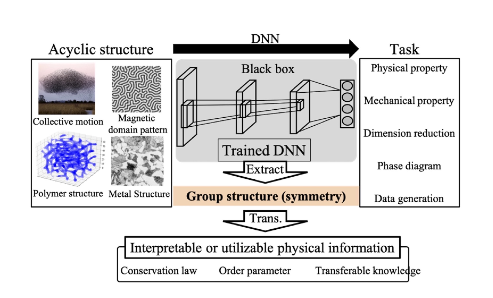

Researches

|
It has been recently reported that highly accurate classification, regression, and generation can be achieved by interpolative modeling of complex scientific data using machine learning models with high expressive power, such as deep neural networks (DNNs). However, many of the machine learning models used there are nonlinear functions with a large number of parameters, making the interpretation of the training results very difficult. In thermodynamics, Gibbs extended the theory of thermodynamics, which was the theory of heat engines, to chemical reactions, which was a great development in science. This shows that science has been greatly advanced by the scientific insight of human beings, who derive general principles beyond mere interpolation models and boldly extrapolate them. On the other hand, it is sometimes difficult to apply such insights to systems with complex non-periodic structures, such as those found in nonlinear and nonequilibrium phenomena. To address this situation, we believe that it is important to collaborate between machine learning, which is good at building interpolation models for complex data, and humans, who can make bold extrapolations based on scientific insights, and are developing methods for interpreting machine learning training results to bridge the gap between the two (the figure to the left). |
| It has been reported that DNNs extract the dataset distribution from the input space as a subspace such as a low-dimensional manifold to efficiently acquire the information necessary to accomplish the task. Also in physical systems, the low-dimensional structure that time series data of dynamical systems have in the phase space composed of position and momentum is considered to be related to physical constraints such as conserved quantities and order variables. In other words, it is expected that interpretable information such as conservation laws and order variables can be extracted from the manifold structure modeled by DNN. In the Hamiltonian dynamical system, which is a kind of dynamical system, there is a theorem called Noether's theorem, which connects the invariance of the system to continuous coordinate transformation and the conserved quantity. From this, it is expected that the conserved quantities can be estimated from the symmetry of the manifold structure captured by DNN (the figure to the right). |  |
|
One of the key items when discussing the definition of science is the “elimination of a priori knowledge”. On the other hand, in the field of scientific measurement and its analysis, analyses that strongly rely on human “subjectivity,” such as least-squares regression with arbitrarily determined initial values, are often performed. We are using the framework of Bayesian inference to provide guidelines for scientists not to be complacent with this situation, but to make science more faithful to its definition. Our approach here is not a simple application of Bayesian inference to measured data but is to model scientists’ activities based on Bayesian inference. The relationship between Bayesian statistics and the work of scientists is described below. In Bayesian statistics-based inference of the latent parameter x, x is estimated by inverting the causal relation p(y|x)p(x) to p(x|y)p(y), mediated by the simultaneous probability p(x,y), which has all information about the random variables involved. Scientists, on the other hand, understand the world from the viewpoint of the law of causality x→y, and then trace causality back to clarify the latent physical structure x that lies behind y→x. In other words, Bayes’ theorem can be seen as a model of scientists’ activities to understand the world of simultaneous probability through the law of causality, and to elucidate the latent physical structure by tracing back the causality. In other words, modeling measurement with Bayesian inference can be seen as modeling the activities of scientists who analyze measurement data. Many scientists also have the belief that if there is more than one model that can explain a phenomenon, they will choose the simpler model. It is no exaggeration to say that this “Occam’s razor” faith has driven science to date. This scientist’s belief is also naturally modeled by the framework of Bayesian inference. Using Bayesian statistics, we have modeled scientific measurement activities in various fields, such as condensed matter physics and materials science. Furthermore, by applying Bayesian inference to measurement, we have realized information extraction to assist physicists beyond a simple analysis of measurement data, such as extraction of effective models based on measurement data and extraction of physical information from posterior distributions. |